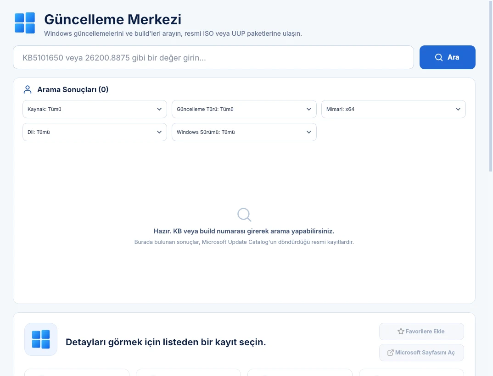
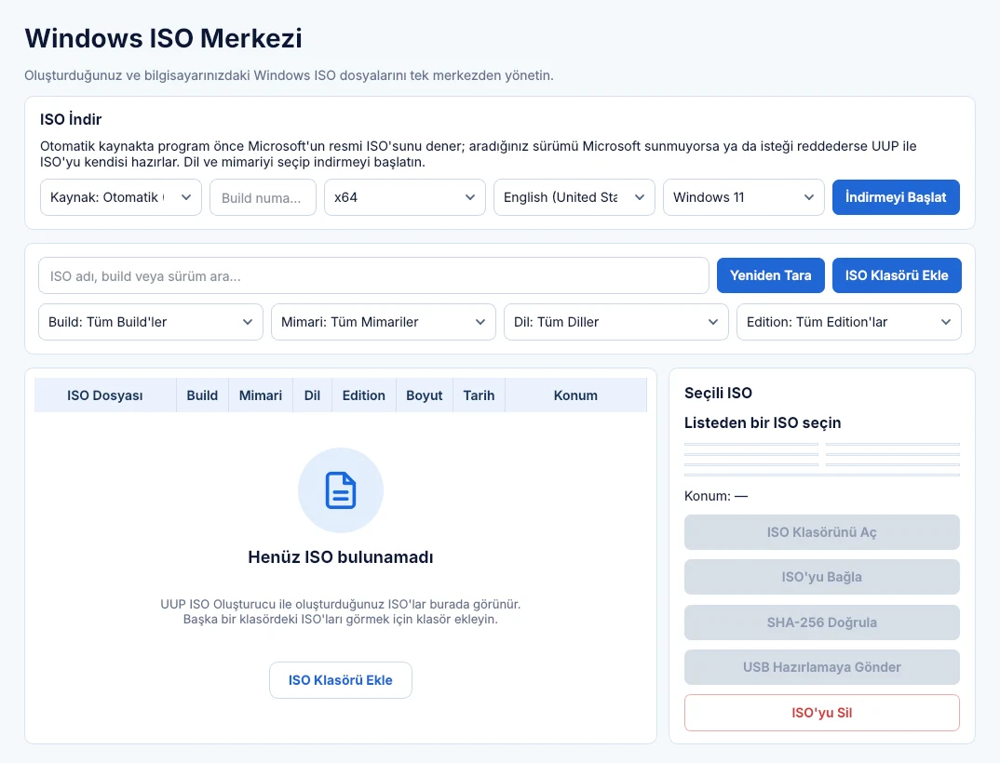
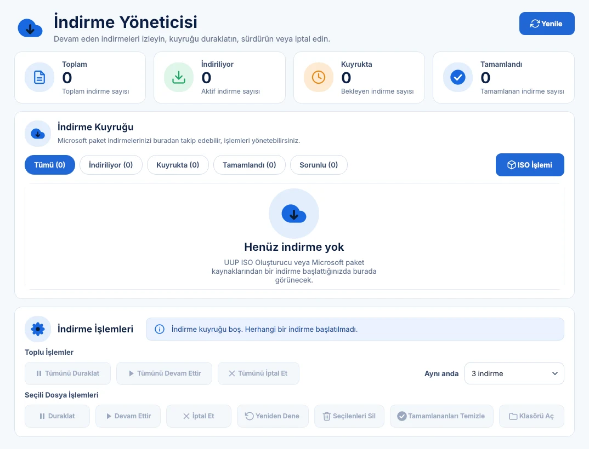
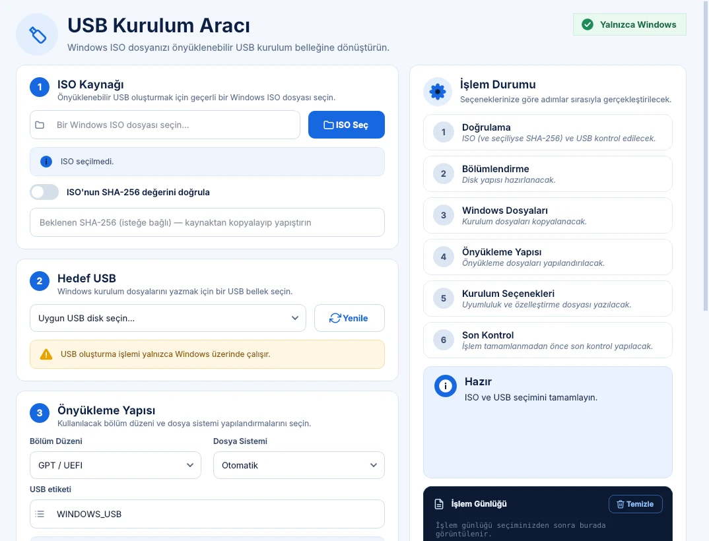

Bul. İndir.
Hazırla. Kur.
Aradığın Windows build'ini bul, resmi kaynaktan indir, ISO'ya dönüştür ve önyüklenebilir USB'ye yaz. Bunların hepsi tek programda, tek akışta.
- Sürüm 6.06
- Windows 10 ve Windows 11
- Türkçe ve İngilizce arayüz
- Açık ve koyu tema

Dört adımda, bir akış
Önce build'i bulursun, sonra program indirmeyi ve ISO'yu hazırlar, en sonunda USB'ye yazarsın. Her adım bir öncekinin kaldığı yerden devam eder.
Bul
KB numarası ya da build ile ara. 26h2 gibi bir sürüm adı yazarsan doğru ISO'ya yönlendirir.
İndir
Dosyalar indirme kuyruğuna girer. Duraklat, sürdür, yeniden dene; yarım kalan indirme kaldığı yerden devam eder.
Hazırla
UUP paketleri indirme bitince otomatik ISO'ya dönüşür. İstersen bu otomatiği Ayarlar'dan kapatırsın.
Kur
ISO'yu önyüklenebilir USB'ye yaz. Bilgisayar adı, yerel kullanıcı ve gizlilik seçeneklerini kurulumdan önce belirle.
Programdan görünümler
Büyütmek için görsele tıkla.



Görseller boş bir kurulumdan alınmıştır; gerçek kullanımda listeler sonuçlarla dolar.
Kurulumu kolaylaştıran özellikler
Sıradan bir indirme aracından fazlası: aradığın dosyayı bulmaktan USB'yi bitirmeye kadar sürecin her adımına yardım eder.
Microsoft Update Catalog
KB numarası veya build ile ara, resmi paketlere ulaş. Yüklü güncellemelerini ve güncelleme geçmişini de görürsün.
Sürüm adıyla ISO arama
"26h2" gibi bir sürüm yaz. Program önce Microsoft'un resmi ISO'sunu dener; sunulmuyorsa UUP ile ISO'yu kendisi hazırlar.
UUP ISO oluşturucu
Insider ve önizleme build'leri için UUP paketlerini indirip ISO'ya çevirir. Başlamadan önce disk alanını kontrol eder.
Windows Sürüm Takibi
Güncel build ve KB kayıtlarını izler, bilgisayarındaki build'i en yeni yayınla karşılaştırır, aylık yayın grafiğini gösterir.
USB kurulum özelleştirme
GPT/MBR ve FAT32/NTFS seçenekleri, ISO SHA-256 doğrulaması, yerel hesap, bilgisayar adı ve gizlilik sayfaları. İsteğe bağlı olarak TPM, Secure Boot ve RAM şartlarını atlama seçeneği.
Sürücü yedekleme
Üçüncü taraf sürücüleri klasöre ya da USB'ye yedekle, kurulumdan sonra tek tıkla geri yükle. Yedek için gereken alanı önceden tahmin eder.
Format atmadan önce işe yararNe işe yarar?
Programın ana bölümleri ve her birinin görevi.
| Bölüm | Görevi |
|---|---|
| Güncelleme Merkezi | KB, build veya sürüm adıyla arama; resmi paket ve ISO'lara ulaşma. |
| Windows Sürüm Takibi | Güncel Windows build ve KB kayıtlarını izleme. |
| Güncelleme Geçmişi · Yüklü Güncellemeler | Geçmiş yayınlar ve bilgisayarda kurulu güncellemeler. |
| Windows 11 Uyumluluğu | Bilgisayarının Windows 11 şartlarını karşılayıp karşılamadığını kontrol etme. |
| UUP ISO Oluşturucu | UUP paketlerinden ISO üretme. |
| İndirme Yöneticisi | İndirmeleri sıraya alma, duraklatma, sürdürme; ISO oluşturma durumu. |
| ISO Merkezi | ISO indirme ve bilgisayardaki ISO'ları yönetme. |
| USB Kurulum Aracı | ISO'dan önyüklenebilir USB oluşturma. |
| Sürücü Yedekleme | Üçüncü taraf sürücüleri yedekleme ve geri yükleme. |
Üç adımda başla
Programı çalıştırmak için yönetici hakları yalnızca disk biçimlendirme ve ISO dönüştürme gibi işlemlerde gerekir.
İndir ve aç
Programı resmi indirme sayfasından indir. Kaynak koddan çalıştırmayı tercih edersen aşağıdaki komutlar yeterli.
Ara
Güncelleme Merkezi'nde aradığın KB, build ya da sürüm adını yaz ve sonucu seç.
İndir ve hazırla
Dil ve mimariyi seç, indirmeyi başlat. ISO hazır olunca USB Kurulum Aracı'na gönder.
Kaynaklar ve merak edilenler
Programın nereden indirdiği ve nelere dikkat etmen gerektiği.
Dosyalar nereden geliyor?
Windows güncellemeleri Microsoft Update Catalog'dan, ISO dosyaları Microsoft'un kendi indirme uç noktalarından ya da UUP kaynağından alınır. Program dosyaları kendi sunucusunda barındırmaz.
Microsoft ISO vermezse ne olur?
Aradığın sürümü Microsoft sunmuyorsa ya da isteği reddederse program otomatik olarak UUP'ye geçer ve ISO'yu indirilen paketlerden kendisi oluşturur. Reddedilme bilgisini 24 saat hatırlar, aynı denemeyi boşuna tekrarlamaz.
ISO oluşturma için ne kadar boş alan lazım?
UUP paketlerinden ISO üretmek için en az 24 GiB ya da paket boyutunun yaklaşık 3,25 katı artı 8 GiB boş alan gerekir; hangisi büyükse o. Program indirmeye başlamadan önce bunu kontrol edip uyarır.
Microsoft bu programı mı geliştirdi?
Hayır. Bağımsız, üçüncü taraf bir uygulamadır; Microsoft ile bağlantısı ya da onayı yoktur.
USB oluşturma sırasında nelere dikkat etmeliyim?
USB'ye yazma işlemi seçtiğin sürücüdeki tüm verileri siler. Onaylamadan önce hedef sürücüyü mutlaka kontrol et. Bu işlem yalnızca Windows'ta çalışır.
Bir indirme yarıda kalırsa?
İndirme Yöneticisi yarım kalan indirmeleri kaldığı yerden sürdürür. Hata alan dosyalar için "Yeniden Dene" düğmesi vardır.
Windows Update & Build Center'ı indir
Windows 10 ve Windows 11 için. Programın resmi indirme sayfası bunyaminkaya.com üzerindedir; sürüm geçmişi GitHub'daki Releases sayfasında da yer alır.
python -m pip install -r requirements.txt
python main.pyKaynak koddan çalıştırmak için Python 3.11 veya üzeri gerekir.
Geliştirici: Bünyamin Kaya
Program, Türkçe teknoloji sitesi bunyaminkaya.com'un geliştiricisi tarafından hazırlanıyor. Görüş, hata bildirimi ve önerilerini programın içinden ya da aşağıdaki bağlantılardan iletebilirsin.